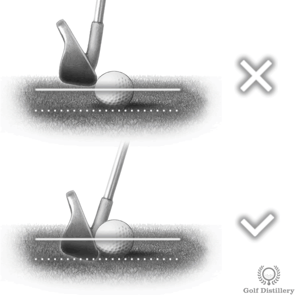
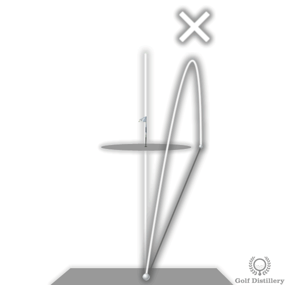
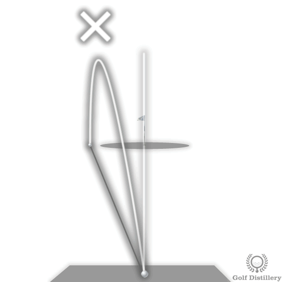

Irons
Setup Tips

General rule: Position the ball in the center of your stance for middle irons (6-7 iron), moving it slightly back for short irons and slightly forward for long irons.
- Short Irons (8-PW): Center to slightly back of center
- Mid Irons (5-7): Center of stance
- Long Irons (3-4): Slightly forward of center
Note: Some instructors advocate for keeping the ball in a consistent forward position (off left heel) for all clubs. Experiment to find what produces the most consistent ball-first contact for you.
Normal stance: Feet positioned shoulder-width apart for mid-irons. This provides the optimal balance between stability and rotation.
- Long irons: Slightly wider than shoulder-width for more stability
- Short irons: Slightly narrower for easier rotation and control
Quick test: Jump slightly off the ground - where your feet naturally land is close to your ideal stance width.

Positive shaft lean: Your hands should be ahead of the ball at address, creating a forward lean of the shaft toward the target. This promotes:
- Hitting down on the ball (compressing it)
- Ball-first contact before ground
- Pure flight and optimal trajectory
- Proper divot after the ball
Important: This forward shaft lean is standard among professional golfers and essential for pure iron play.
At address: Weight should be distributed evenly between both feet, or with a slight bias (55/45) toward the front foot.
During swing: Transfer weight to back foot during backswing, then shift strongly to front foot through impact and follow-through.
Common error: Too much weight on back foot promotes thin shots; too much on front foot can cause pulls.

Grip like holding a bird: Apply just enough pressure to hold the club securely, but not so much that you'd harm a small bird.
Benefits of light grip pressure:
- Reduces tension in forearms and shoulders
- Increases feel and touch
- Promotes natural clubface release
- Prevents excessive grip wear and calluses
Key: Maintain constant pressure throughout the swing - avoid tightening during takeaway or impact.
Setup:
- Bend forward from the hips (not the waist)
- Keep your back relatively straight
- Allow knees to flex moderately
- Let arms hang naturally from shoulders
- Right shoulder lower than left (for right-handed golfers)
Critical: Maintain this spine angle throughout the swing from address through impact. Rising up or dipping down causes inconsistent contact.
Swing Keys

The Golden Rule of Iron Play: The club must strike the ball before the ground. This is achieved through a descending blow that compresses the ball against the turf.
How to achieve it:
- Hands ahead of ball at address
- Maintain forward shaft lean through impact
- Keep head steady (not swaying or lifting)
- Weight shifting to front foot through impact
With irons, hit DOWN on the ball: Unlike the driver (where you sweep upward), irons require a descending strike.
The club should be traveling downward when it contacts the ball, continuing into the ground after ball contact to create a divot.
Key mental image: "Trap the ball" against the turf - compress it between the clubface and ground.
Proper sequence: Ball contact → Ground contact → Divot
Your divot should begin at or slightly in front of where the ball was positioned. If your divot is behind the ball, you're hitting fat shots.
Divot characteristics:
- Starts after the ball position
- Points toward the target
- Shallow and consistent depth
- Not excessively deep (you're not digging for treasure)

Ball compression = Distance + Control: Proper compression creates optimal launch conditions and spin.
How compression happens:
- Descending blow drives ball into ground
- Ball momentarily flattens against clubface
- Grooves create backspin
- Ball launches with optimal trajectory and spin
Feel: Solid contact feels effortless and produces a distinct "click" sound rather than a "thud."

Set it and forget it: The spine angle established at address must remain constant through impact.
Common errors:
- Standing up (early extension): Raises the swing arc, causes thin/topped shots
- Dipping down: Lowers swing arc, causes fat shots
- Swaying laterally: Moves swing arc location, causes inconsistent contact
Practice drill: Imagine your head is against a wall behind you - keep it there from top of backswing through impact.

Smooth over fast: Consistent tempo is more important than swing speed for iron play.
Key tempo thoughts:
- "Low and slow": Start takeaway smoothly
- "Don't try to kill it": Swing within yourself
- "Tempo, tempo, tempo!": Focus on rhythm over power
- "Swing like holding a garden hose": Maintain flowing motion
Top 5 Swing Thoughts
What it promotes: Light grip pressure that reduces tension and increases feel.
When to use: When you feel tense, when rhythm is off, or when you need more touch and control.
Why it works: You'll automatically apply sufficient pressure during the swing. Starting light ensures you won't be too tight at impact.

What it promotes: Maintaining wrist hinge through impact; hands ahead of clubhead.
When to use: When losing distance, hitting weak shots, or struggling with ball-first contact.
Why it works: Preserves angle between arms and club for maximum compression and clubhead speed at impact.
What it promotes: Hitting down on the ball to compress it against the turf.
When to use: When struggling with ball-first contact, hitting thin/fat shots, or need better compression.
Why it works: Creates mental image of descending blow and proper impact position for irons.
What it promotes: Maintaining spine angle and posture through impact.
When to use: When hitting thin shots, topping the ball, or inconsistent contact.
Why it works: Prevents early extension that raises swing arc and causes poor contact.
What it promotes: Smooth, controlled takeaway that sets up entire swing.
When to use: When rushing the swing, losing tempo, or struggling with consistency.
Why it works: Establishes proper swing path from the start and promotes smooth rhythm throughout.
Common Fixes
Cause

Club hits ground before ball. Bottom of swing arc is too far behind the ball or too low into the ground.
Fix
- Swaying: Hips move laterally instead of rotating
Fix: Rotate upper body without moving hips laterally; keep right knee flexed - Ball too far forward: Ball positioned past bottom of swing arc
Fix: Center ball in stance for wedges, move progressively forward for longer irons - Stance too wide: Lowers body and swing arc
Fix: Position feet shoulder-width apart - Weight on back foot: Promotes behind-ball contact
Fix: Distribute weight evenly or slightly forward - Failing to maintain spine angle: Dipping or moving forward
Fix: Keep spine angle constant from address through impact
Cause

Leading edge hits ball below equator. Bottom of swing arc is too high or positioned incorrectly relative to ball.
Fix
- Standing up at impact (early extension): Raises swing arc
Fix: Keep head at same height from address through impact - Ball too far forward: Reach for ball causes standing up
Fix: Adjust ball position - center for mid-irons, progressively forward for longer clubs - Stance too narrow: Raises swing arc bottom
Fix: Widen to shoulder-width stance - Weight on back foot: Moves swing arc bottom backward
Fix: Weight equal or slightly favoring front foot - Scooping/flipping: Hands stop leading through impact
Fix: Maintain wrist hinge through impact; don't release early
Cause
Leading edge hits above ball's equator. Bottom of swing arc too high, too soon, or too late.
Fix
- Swaying during swing: Moves arc from setup position
Fix: Keep right knee leaned inward and flexed throughout backswing - Reverse pivot: Weight moves toward target on backswing
Fix: Transfer weight to back foot during backswing, front foot on downswing - Ball positioned incorrectly: Creates mismatch with swing arc
Fix: Start with center position, adjust from there - Incorrect weight distribution: Too much on front or back foot
Fix: Distribute weight equally at address
Cause
Clubface open at impact but square to club path; inside-out swing path.
Fix
- Check alignment: Ensure you're not aimed right
Fix: Adopt square stance, clubface aimed at target - Inside-out path + weak grip: Promotes lazy release
Fix: Take club back square (not inside); strengthen grip (see 2-3 knuckles) - Ball too far back: Catch ball before face rotates square
Fix: Move ball forward in stance - Grip pressure too tight: Restricts release
Fix: Lighter grip pressure, especially right hand
Cause
Clubface closed at impact and square to path; outside-in swing path.
Fix
- Check alignment: Ensure you're not aimed left
Fix: Adopt square stance aligned at target - Outside-in path + strong grip: Promotes closed face
Fix: Take club back square (not outside); weaken grip (see 1-2 knuckles) - Ball too far forward: Hit during release when path goes left
Fix: Move ball back in stance - Over-the-top move: Club outside target line on downswing
Fix: Work on inside-square-inside path
Common Causes and Fixes
- Poor ball compression: Not hitting down on ball
Fix: Forward shaft lean, descending blow, ball-first contact - Weak impact position: Hands not leading at impact
Fix: Keep lag; hands ahead of clubhead through impact - Grip pressure too tight: Restricts clubhead speed
Fix: Grip like holding a bird - Decelerating through impact: Slowing down before ball
Fix: Hit THROUGH the ball, not AT it; accelerate through impact - Fat or thin contact: Energy wasted on ground or poor strike
Fix: Address specific contact issues above
Common Causes and Fixes
- Inconsistent spine angle: Moving up/down during swing
Fix: Imagine head against wall; maintain height - Varying ball position: Setup not consistent
Fix: Use alignment sticks; develop consistent routine - Inconsistent stance width: Changes between shots
Fix: Establish shoulder-width baseline; stick to it - Swaying or lateral movement: Moving swing arc
Fix: Turn, don't sway; maintain right knee flex - Tempo variations: Fast then slow, or vice versa
Fix: Count rhythm (1-2-3); focus on tempo over power
Difficult Lies

Natural tendency: Ball will fly left of target.
Setup adjustments:
- Aim right of target to compensate
- Grip down on the club (ball is closer to you)
- Stand more upright
- Expect a draw/hook ball flight
- Take one more club (distance will be shorter)
Swing key: Make a more controlled, compact swing. The slope will promote an around-the-body swing plane.
Natural tendency: Ball will fly right of target; risk of thin contact or missing ball entirely.
Setup adjustments:
- Aim left of target to compensate
- Widen your stance for more stability
- Bend more from the hips to reach ball
- Grip at full length (or higher) on club
- Flex knees more to get down to ball
- Expect a fade/slice ball flight
Swing key: Maintain your knee flex throughout. This is one of the most difficult lies - accept a more conservative approach.

Natural tendency: Ball flies higher and shorter; tendency to hook.
Setup adjustments:
- Tilt shoulders to match the slope
- Place more weight on downhill (back) foot
- Aim slightly right (ball will draw)
- Take one or two more clubs (shot will fly shorter)
- Position ball slightly forward in stance
Swing key: Swing with the slope. Risk hitting behind ball (fat), so focus on clean contact over distance.

Natural tendency: Ball flies lower and longer; tendency to fade/slice; difficult lie.
Setup adjustments:
- Tilt shoulders to match the slope (critical)
- Place more weight on downhill (front) foot
- Aim slightly left (ball will fade)
- Take one less club (ball flies farther)
- Position ball back in stance
- Accept a lower trajectory
Swing key: Swing down the slope. High risk of thin/topped shots. Prioritize solid contact and accept shorter distance.
Challenge: Ball on very short grass or bare ground; minimal cushion. Risk of club bouncing off hard ground and hitting ball thin.
Setup adjustments:
- Ball position slightly back of center
- Hands slightly more forward
- Weight slightly favoring front foot
- Narrow stance slightly for better control
Swing key: Focus on crisp, descending contact. Avoid trying to help ball up - let loft do the work. A clean, compressing strike is essential.
Situation: Ball resting in an old divot. Treat like a mini-downhill lie.
Setup adjustments:
- Ball position back in stance
- Hands well forward
- Weight forward
- Take one more club
- Expect lower trajectory
Swing key: Steep angle of attack. Hit down firmly - you need to dig the ball out. Accept that this won't be a perfect shot.
Effect: Ball in first cut or light rough. Grass between clubface and ball reduces spin; ball may fly slightly farther ("flyer" lie).
Adjustments:
- Minimal setup changes needed
- Consider taking one less club
- Expect less backspin
- Ball may release more on landing
Swing key: Normal swing; be aware ball may fly farther and roll more than expected.

Challenge: Ball buried in thick grass, possibly against the grain. Grass will grab the hosel and close the clubface; significant distance loss.
Setup adjustments:
- Take more lofted club (or even wedge)
- Open clubface at address to compensate for closing
- Ball position center or slightly back
- Stronger grip
- Weight forward
Swing key: Steep, powerful swing. Grass will slow club dramatically. Priority is getting ball back to fairway, not distance.
Strategy: Accept that you may need to lay up rather than attempting a heroic shot.